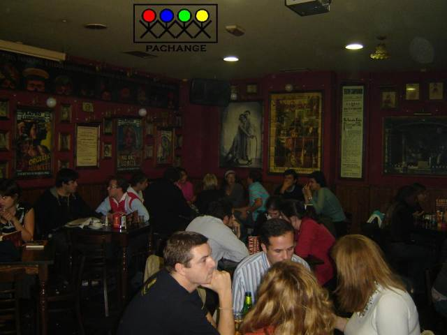

Pachange is a project which organises exchange meetings to practice languages. It starts one year ago in Málaga(Spain) and it keeps on successing among the Spanish and Foreign students. The very same project started in Oviedo last September, and now we hope to have our first meeting in Gijon at the beginning of November. But, we need your help! We are looking for anyone who would like to learn (a new language) and to teach (their own language).

:: How does it work? ::
We usually meet every 2 weeks on a place (in the centre of Gijon), where we assign each Spanish student with one Foreign partner. Later we go to a bar and we spend about an hour practicing Spanish and another one a Foreign language.

:: Next Meeting ::
:: Inscription ::
If you want to participate it is necessary to send us an email at gijon@pachange.net
with your personal information (name, age, native language and the language you want to practice).
Or click here to subscribe online.
:: More Information ::
For more information contact us at: gijon@pachange.net.
:: Organizers ::
Juanjo del Coz
Roberto Cayado
:: About us ::
Juanjo: Lifetime student of English language and teacher of other subjects.
Roberto: He is a nurse that has born to organize exchange meetings.
- Organized by students for students -